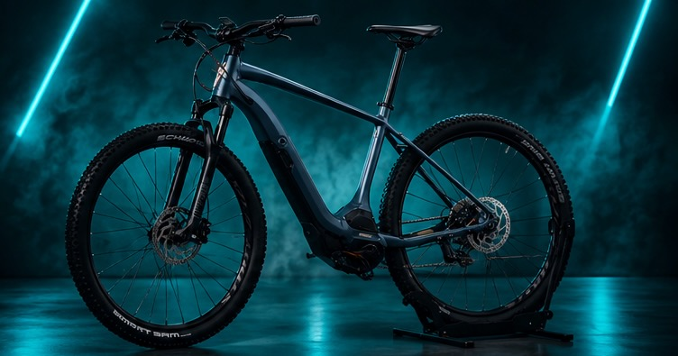

Motor
Specialized 2.1
90 Nm Drehmoment · Mittelmotor
MEIN WUNSCH-E-BIKE
Warum ich mir dieses E-Mountainbike wünsche und weshalb ich glaube, dass es eine gute und durchdachte Anschaffung ist.
THE BIKE entdecken ↓DAS FAHRRAD
Es geht um das Specialized Turbo Levo Comp aus dem Modelljahr 2019. Ein sportliches E-Mountainbike-Fully, das mich im Alltag und in meiner Freizeit begleiten könnte.
Ich möchte damit nicht nur Fahrrad fahren, sondern flexibler unterwegs sein, neue Strecken entdecken und mehr Zeit draußen verbringen.
Mir ist wichtig, nicht einfach irgendein Fahrrad zu kaufen. Ich habe mich deshalb mit dem Modell, der Ausstattung und dem Angebot beschäftigt. Laut Upway hat dieses Exemplar bereits 3.514 km zurückgelegt und wiegt etwa 24 kg.

ENTDECKE DAS PROJEKT
Alle Informationen sind in fünf übersichtliche Bereiche aufgeteilt.
THE BIKE
Entdecke das Fahrrad, seine Ausstattung und die Details aus verschiedenen Perspektiven.
EIN GENAUERER BLICK
Ein paar Eindrücke vom Fahrrad und seiner Ausstattung.
DIE AUSSTATTUNG
Die wichtigsten technischen Daten des angebotenen Modells. Die Angaben sollten vor dem Kauf noch einmal mit dem aktuellen Inserat abgeglichen werden.
Specialized 2.1
90 Nm Drehmoment · Mittelmotor700 Wh
700 Wh · im Rahmen integriertRockShox Lyrik
140 mm vorne · RockShox Deluxe Select+ hintenSRAM GX
11 Gänge · SRAM GX29 Zoll
Specialized Butcher Grid T9L
Upway-Angabe: 1,74–1,88 m3.514 km
Angabe im aktuellen InseratDIE DETAILS
ANTRIEB
Das Detailfoto zeigt die Kassette und das Schaltwerk der SRAM-GX-Schaltung.
BEDIENUNG
Hier befinden sich Lenker, Bedienelemente und Display des E-Bikes.
TECH & EXPERIENCE
Interaktive Demos machen die Technik und mögliche Fahrszenarien anschaulich.
RANGE SIMULATOR
Passe die Bedingungen an und erhalte eine grobe Orientierung. Die tatsächliche Reichweite hängt unter anderem von Temperatur, Strecke, Reifendruck, Fahrstil und Akkuzustand ab.
GESCHÄTZTE REICHWEITE
Wähle deine Bedingungen aus, um die Schätzung zu sehen.
DIGITAL COCKPIT
Bediene das Demo-Cockpit wie ein kleines Borddisplay: Starte die Simulation, wechsle den Fahrmodus und beobachte, wie Akku, Strecke und Restreichweite reagieren.
Interaktive Simulation zu Demonstrationszwecken. Die Werte sind modelliert und stammen nicht von einem echten Fahrrad oder Sensor.
THE OFFER
Preis, Zustand und Kaufbedingungen – übersichtlich an einem Ort.
AKTUELLES UPWAY-ANGEBOT
Diese Werte wurden am 21. November 2026 direkt im verlinkten Upway-Angebot geprüft. Preis und Verfügbarkeit können sich jederzeit ändern.
1.699 €
49 € Versand · zusammen 1.748 €3.514 km
Angabe im Upway-InseratExzellent
700 Wh · laut UpwayNov. 2026
50-Punkte-Inspektion in StuttgartLaut Angebot: ein Jahr gesetzliche Garantie und 14 Tage Rückgaberecht. Upway zeigte beim Abruf ein Exemplar als verfügbar an.
ZUSTAND & PRÜFUNG
Upway gibt an, Akku, Motor, Display, Rahmen, Antrieb, Bremsen, Räder und Federung geprüft zu haben.
Laut Inspektionsbericht wurden Akku, Motor und Display diagnostiziert und als einwandfrei beschrieben.
Der Mechaniker nennt äußerliche Beschädigungen an einigen Stellen, aber keine tiefen Abschürfungen.
Die Teleskopsattelstütze hat laut Bericht wenige Millimeter seitliches Spiel; Upway bezeichnet dies als normal.
Den vollständigen Inspektionsbericht bitte vor einer Kaufentscheidung selbst lesen.
DER KAUF
Das Specialized Turbo Levo Comp (Baujahr 2019) wird über Upway angeboten. Upway ist auf gebrauchte und wiederaufbereitete E-Bikes spezialisiert.
Dieses Exemplar wurde laut Inserat im November 2026 in Stuttgart aufbereitet und durchlief eine 50-Punkte-Inspektion. Der Akku wird als exzellent angegeben. Die konkreten Hinweise des Mechanikers zum optischen Zustand und zur Sattelstütze stehen im Abschnitt „Zustand & Prüfung“.
VERANTWORTUNG
Ich möchte das Fahrrad regelmäßig reinigen und pflegen.
Ich achte auf einen Helm, Beleuchtung und einen sicheren Fahrstil.
Ich werde auf eine sichere Abstellmöglichkeit und ein gutes Schloss achten.
Mir ist klar, dass Wartung und mögliche Reparaturen zusätzlich Geld kosten können.
MAKE IT HAPPEN
Warum ich mir dieses Fahrrad wünsche und wie Familie und Freunde mich unterstützen können.
GEMEINSAM ZUM TRAUM-BIKE
Wenn Familie oder Freunde etwas dazugeben möchten, wächst der Fortschritt Schritt für Schritt.
DEIN PLATZ AUF DER SUPPORT WALL
Unterstütze das Projekt und gestalte dein eigenes kleines Profilbild.
Dein Profil wird erst nach Prüfung und Bestätigung deines Beitrags veröffentlicht. Bitte verwende nur einen Vornamen oder Spitznamen.
THE PEOPLE BEHIND THE PROJECT
Jeder Supporter hinterlässt seinen eigenen kleinen kreativen Abdruck. Danke, dass ihr Teil davon seid.
Die Support Wall wird geladen …
Angezeigt werden nur freigegebene Profile. Es werden keine Beitragshöhen oder Zahlungsdaten veröffentlicht.
WARUM ICH ES MÖCHTE
Ich kann Ausflüge machen, neue Wege erkunden und mehr Zeit an der frischen Luft verbringen.
Das Fahrrad kann mir helfen, alltägliche Wege selbstständig und flexibel zurückzulegen.
Ich könnte es über einen längeren Zeitraum nutzen und damit regelmäßig unterwegs sein.
MEIN WUNSCH
Ich wünsche mir dieses E-Bike nicht einfach, weil es gut aussieht. Ich möchte es im Alltag und in meiner Freizeit regelmäßig nutzen, selbst Geld dazugeben und verantwortungsvoll damit umgehen.
Deshalb würde ich mich freuen, wenn wir gemeinsam überlegen, ob dieser Kauf möglich und sinnvoll ist.
Fahrrad bei Upway ansehen ↗